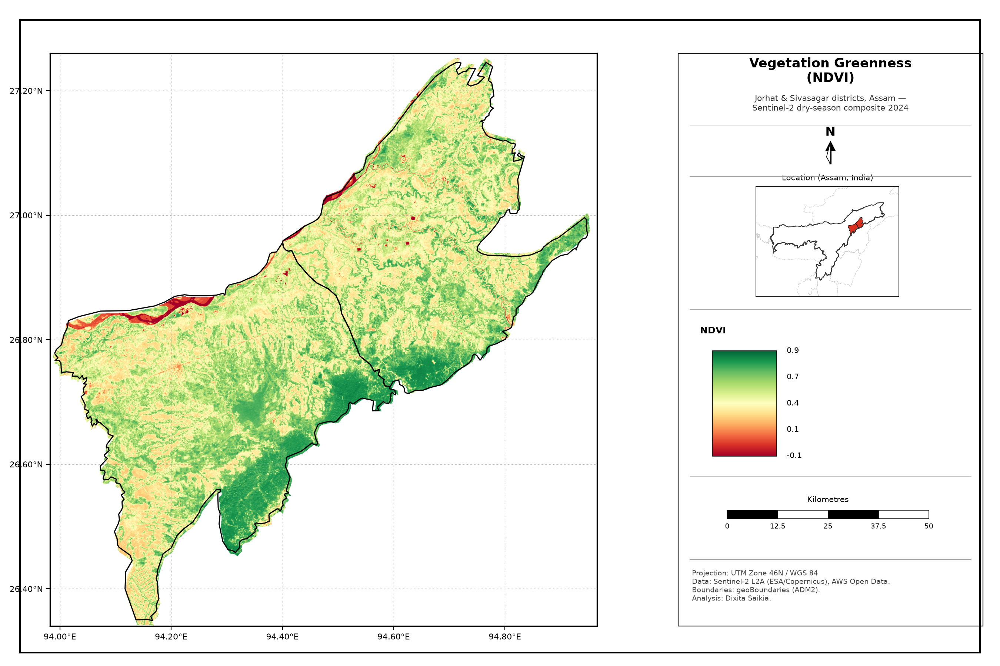
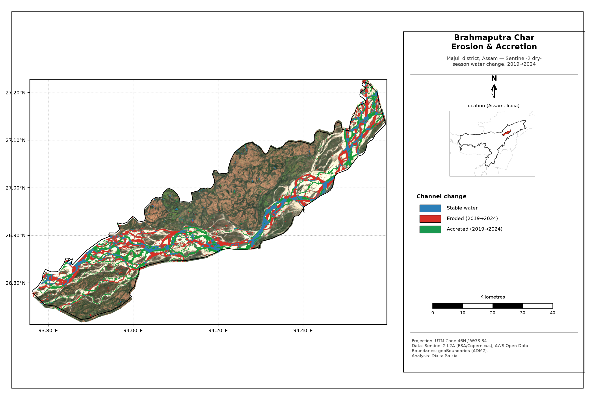
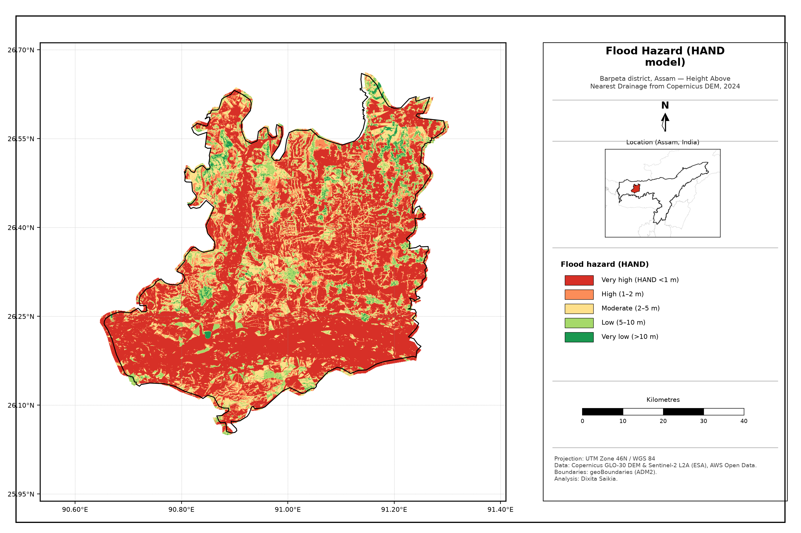

FILE 01 · SENTINEL-22026
▓▒░ DECRYPTING ░▒▓
Tea-belt greenness & canopy density, Jorhat–Sivasagar — 32-scene composite, district-clipped.
NDVI median 0.51 · dense canopy 31%
OPEN ARTIFACT ↗Real satellite intelligence on Assam — turned into maps and a story. Scroll to let the downlink decrypt.
Each project is a satellite intercept. The raw signal resolves into real, reproducible work.

Tea-belt greenness & canopy density, Jorhat–Sivasagar — 32-scene composite, district-clipped.

Brahmaputra char erosion & accretion at Majuli, 2019→2024, from Sentinel-2 water composites.

Terrain flood-hazard (HAND model) for Barpeta — where the floodplain drowns first.